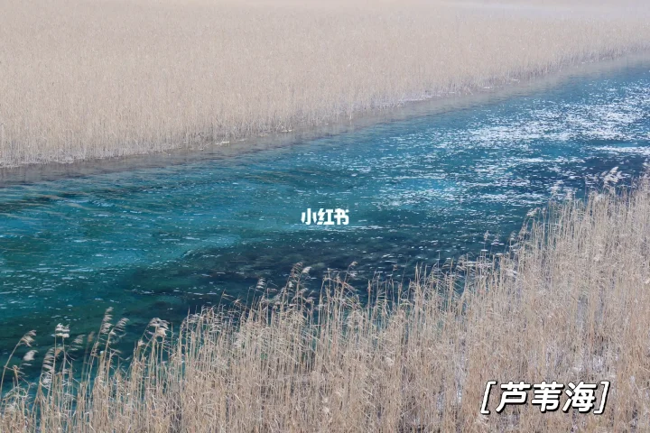

🗓 D6 - 九寨溝一日遊
2025年12月31日（星期三）
- 九寨溝景區門票：¥160 / 人（淡季）
- 觀光車：景區內必須乘坐景區觀光車，票價已含在門票內
- 開放時間：8:00-17:00（冬季可能調整）
- 景區內禁止攜帶食物，但可攜帶飲用水
- 注意觀光車時間，避免錯過最後一班車
- 冬季氣溫較低，需穿著保暖衣物
- 冬季日落較早，注意合理安排時間
行程安排
9:00入園
景點：長海⭐️
- 景區入口上車直達（建議坐左側位置，約50分鐘車程）
- 雪景，海拔3100米，注意高原反應
景點：五彩池⭐️
- 由長海步行前往（1.2公里）
景點：諾日朗中心站
- 五彩池上車前往（建議坐右側位置，約25分鐘車程）
- 午餐
景點：熊貓海
- 諾日朗中心站上車前往（建議坐右側位置）
- 推薦烤腸
景點：五花海⭐️
- 熊貓海上車前往（建議坐左側位置）
- 1.4公里環形棧道，步行20分鐘，視乎天氣決定
- 推薦烤腸
景點：鏡海
- 五花海上車前往（建議坐左側位置）
景點：諾日朗瀑布
景點：蘆葦海⭐️
- 由盆景灘站步行前往

晚餐：格桑花銅鍋氂牛肉音樂餐廳
實用提示
- 九寨溝海拔約2000-3000米，可能出現高原反應，預防措施：
- 抵達後不要劇烈運動，適當休息
- 多飲水，避免飲酒
- 可提前服用紅景天等預防藥物（請遵醫囑）
- 隨身攜帶高原反應藥物如西洋參含片、急救氧氣等
- 12月九寨溝氣溫較低，白天約0-10°C，夜間可能低至-10°C
- 日照強烈，需做好防曬與保暖
- 天氣多變，建議攜帶雨具
- 景區救援：0837-7739753
預算總結
九寨溝景區門票
¥640
合計（D6）
¥640